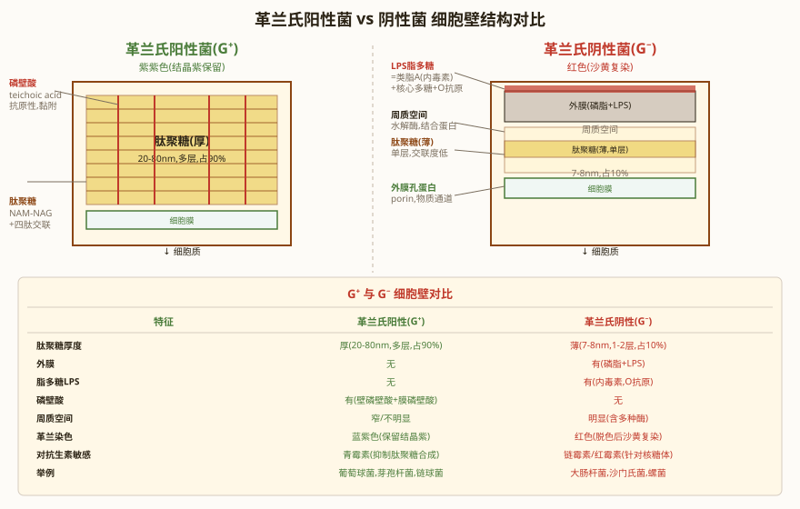
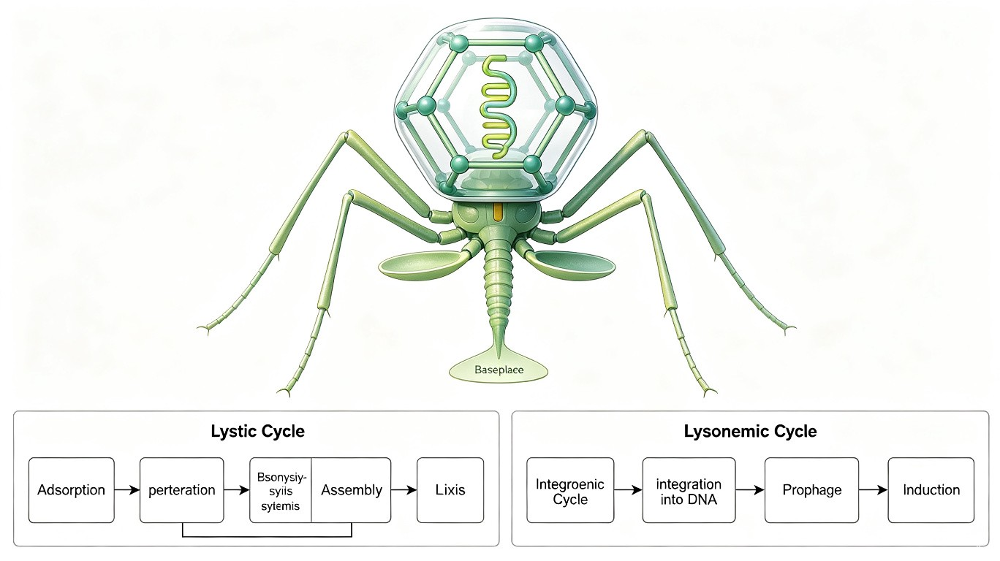

第一节 微生物与微生物学
一、微生物的定义
微生物（microorganism / microbe）是指一群肉眼不可见、必须借助显微镜才能观察到的微小生物的总称。它们并非一个分类学上的自然类群，而是按形体大小划分的复合类群，涵盖了原核生物、真核微生物（真菌、原生生物等）以及非细胞型微生物（病毒）。
需注意：部分大型真菌（如蘑菇）子实体肉眼可见，但其营养体（菌丝）仍属微生物学的研究范畴。因此"微生物"的界定以生活史的主体阶段微小为准。
二、微生物的五大共同特点
微生物虽然类群庞杂，但具有以下五个共同特点：
- 个体微小、结构简单：测量单位为μm级（病毒为nm级）；多为单细胞（细菌、酵母菌）、简单多细胞（霉菌）或非细胞结构（病毒）。
- 繁殖快：大肠杆菌在适宜条件下约20分钟分裂一次。若不受限制，理论上24小时可繁殖数十代，菌体数量可达天文数字。
- 代谢类型多样：涵盖自养与异养、光能与化能、好氧与厌氧等多种营养与呼吸类型，几乎能利用一切可利用的底物。
- 分布广泛：土壤、水体、空气、极端环境（高温、高压、强酸、高盐、高辐射）乃至人体内外均有分布，可谓"无处不在"。
- 易于变异：基因组相对较小且繁殖极快，突变累积迅速，使得微生物适应性强、易产生耐药性，也是进化的优良材料。
三、微生物学的定义与学科范围
微生物学（Microbiology）是研究微生物的形态结构、生理代谢、遗传变异、生态分布、分类鉴定以及与人类、动植物相互关系和实际应用的一门科学。
按研究内容可分为：微生物形态学、微生物生理学、微生物遗传学、微生物生态学、微生物分类学等；按应用对象可分为：医学微生物学、农业微生物学、工业微生物学、食品微生物学、环境微生物学等。
第二节 微生物学的建立与发展
一、微生物的发现与早期探索
列文虎克（Antonie van Leeuwenhoek, 1676）：荷兰商人，自制了放大倍数达200~300倍的单式显微镜，首次观察到细菌、原生动物等微生物，将其称为"微小动物（animalcules）"。他是微生物学的先驱，但未建立系统的分类与理论。
林奈（Carl Linnaeus, 1735）：瑞典博物学家，建立了双名法分类系统，为生物（含微生物）的统一命名奠定了基础。其在《自然系统》中提出界、纲、目、属、种的等级框架。
二、巴斯德（Louis Pasteur, 1857—1864）——微生物学的奠基人
巴斯德是法国化学家、微生物学家，被誉为"微生物学之父"。其四大贡献如下：
- 鹅颈瓶实验（Swan-neck flask experiment）：设计带弯曲长颈的烧瓶，煮沸肉汤后冷却，空气可进入但微生物被截留在弯颈处，肉汤长期不腐败；一旦倾倒折断瓶颈，微生物落入则迅速腐败。该实验彻底推翻了"自然发生说"（自生说），确立了"生物来自生物"的生源论。
- 巴氏消毒法（Pasteurization）：采用60~65℃短时间加热的方法杀灭有害微生物（如牛奶中的结核杆菌），同时保留风味与营养。至今仍广泛用于乳制品、果汁、啤酒等。
- 疫苗研制：发明了狂犬病疫苗（减毒活疫苗）和炭疽疫苗，开创了人工免疫的先河。
- 发酵理论：证明发酵是由微生物引起的（如酵母菌引起酒精发酵），而非纯粹的化学反应，奠定了工业微生物学基础。
三、科赫（Robert Koch, 1876）——细菌学与病原学的奠基人
科赫是德国细菌学家，其主要贡献集中在病原菌的分离鉴定与实验技术方面：
- 科赫法则（Koch's postulates）：用于判定某种微生物是否为某疾病病原的四个条件：
- 在每一病例中都出现相同的微生物，而健康者体内不存在该微生物；
- 该微生物能从患病个体中分离并在体外纯培养；
- 将纯培养物接种到健康敏感宿主后，能引起相同的疾病；
- 能从人工感染的宿主体内重新分离出该微生物，并证明与原接种物相同。
- 固体培养基与纯培养技术：采用琼脂平板（agar plate）作为固体培养基，实现了单一菌落的分离与纯培养，是微生物学实验方法的革命性突破。
- 重要病原菌的发现：
- 炭疽杆菌（Bacillus anthracis, 1876）；
- 结核杆菌（Mycobacterium tuberculosis, 1882）；
- 霍乱弧菌（Vibrio cholerae, 1883）。
四、其他里程碑式发现
| 年代 | 科学家 | 主要贡献 | 意义 |
|---|---|---|---|
| 1928 | Fleming（弗莱明） | 发现青霉素（Penicillin） | 开创抗生素时代，1945年获诺贝尔奖 |
| 1944 | Avery（艾弗里） | 肺炎链球菌转化实验证明DNA是遗传物质 | 推翻蛋白质遗传论，奠定分子遗传学基础 |
| 1953 | Watson & Crick | 提出DNA双螺旋结构 | 分子生物学纪元的开端 |
| 1977 | Woese（乌斯） | 基于rRNA序列分析提出三域学说 | 颠覆传统五界系统，重塑生命演化树 |
此外，伊万诺夫斯基（Ivanovsky, 1892）发现烟草花叶病毒可通过细菌滤器，开启了病毒学研究；拜耶林克（Beijerinck）与维诺格拉德斯基（Winogradsky）发展了土壤微生物学与富集培养技术。
第三节 微生物的分类与命名
一、分类等级与基本单位
微生物的分类等级与动植物一致，自上而下为：界 → 门 → 纲 → 目 → 科 → 属 → 种（Kingdom → Phylum → Class → Order → Family → Genus → Species）。
其中种（species）是最基本的分类单位。在种以下还可进一步划分亚种（subspecies）、变种（variety）、型（type/biovar）、菌株（strain）等。菌株是来自同一来源的纯培养物后代，在遗传上可能有细微差异。
记忆口诀："界门纲目科属种"，可联想"界门外的纲目上，科长属下有种种"。
二、双名法（Binomial Nomenclature）
由林奈于1735年创立。双名法规定每个物种的学名由两部分组成：
- 属名（Genus）：首字母大写，名词，表示该种所属的属；
- 种加词（Specific epithet）：首字母小写，形容词或名词所有格，描述该种的特征。
学名使用拉丁文或拉丁化的文字，排版时斜体（手写时下加横线）。例如：Escherichia coli（大肠杆菌）、Saccharomyces cerevisiae（酿酒酵母）、Bacillus subtilis（枯草芽孢杆菌）。
若需指明菌株，可在种名后加菌株号，如 E. coli K12（非斜体部分）。
三、三域学说（Three-Domain System, Woese 1990）
美国微生物学家Carl Woese于1977年基于核糖体小亚基RNA（SSU rRNA）序列的系统发生分析，提出将生命分为三域：
- 细菌域 Bacteria：即真细菌，原核，对应16S rRNA；
- 古菌域 Archaea：原核，但分子生物学特征独特，对应16S rRNA；
- 真核域 Eukarya：真核生物，对应18S rRNA。
三域从共同祖先（LUCA, Last Universal Common Ancestor）演化而来，呈三叉分支。关键发现：古菌与真核生物的亲缘关系比与细菌更近，主要体现在信息处理系统（DNA复制、转录、翻译相关蛋白）的高度相似性。

四、五界系统（Whittaker 1969）与三域对比
Whittaker 五界系统（1969）依据细胞结构与营养方式，将生物分为五界：
- 原核界（Monera）：细菌、蓝细菌等原核生物；
- 原生生物界（Protista）：单细胞真核生物（草履虫、变形虫等）；
- 真菌界（Fungi）：酵母、霉菌、蘑菇；
- 植物界（Plantae）：光合自养真核生物；
- 动物界（Animalia）：异养、能运动的多细胞真核生物。
| 对比维度 | 五界系统（Whittaker, 1969） | 三域学说（Woese, 1990） |
|---|---|---|
| 分类依据 | 细胞结构、营养方式 | 16S/18S rRNA 序列分析 |
| 最高等级 | 界（Kingdom） | 域（Domain） |
| 原核生物处理 | 统一归入原核界 | 拆分为细菌域与古菌域 |
| 古菌地位 | 与细菌同界 | 独立成域，与真核更近 |
| 真核生物 | 分属四界 | 统一归入真核域 |
| 优势 | 直观、易于教学 | 反映真实演化关系 |
| 局限 | 原核界并系群，不反映演化 | 部分类群位置仍有争议 |
第四节 原核微生物总论
一、原核生物的基本特征
原核生物（Prokaryote）是一类无真正细胞核（无核膜、无核仁）的微生物，其遗传物质为裸露的环状DNA分子，集中于拟核（nucleoid）区域。基本特征归纳如下：
- 无核膜、无核仁，仅有拟核区；
- 无膜性细胞器（无线粒体、叶绿体、内质网、高尔基体等）；
- 核糖体为 70S（由 30S 小亚基 + 50S 大亚基组成）；
- 基因组为环状双链 DNA（dsDNA），通常无内含子；
- 细胞壁主要成分为肽聚糖（古菌为假肽聚糖或蛋白质S层）；
- 繁殖方式以二分裂为主。
二、原核生物的主要类群
按三域学说，原核生物分属细菌域与古菌域两大类群：
（一）细菌域 Bacteria，按革兰氏染色反应分为两大类：
- 革兰氏阳性菌（G⁺）：厚壁菌门（Firmicutes，如芽孢杆菌、葡萄球菌）、放线菌门（Actinobacteria，如链霉菌）等；
- 革兰氏阴性菌（G⁻）：变形菌门（Proteobacteria，如大肠杆菌、根瘤菌）、蓝细菌门（Cyanobacteria，如念珠藻、鱼腥藻）等。
（二）古菌域 Archaea，主要分两大门：
- 嗜泉古菌门（Crenarchaeota）：多生活于热泉、火山口等极端高温环境（如硫化叶菌）；
- 广古菌门（Euryarchaeota）：包括产甲烷菌（Methanogens）、嗜盐菌（Halophiles）、嗜热酸菌（Thermoplasma）等。
三、革兰氏染色法（Gram Stain, 1884）
由丹麦细菌学家Gram（革兰）于1884年发明，是细菌分类与鉴定的基础方法。染色步骤如下：
- 结晶紫初染（Crystal violet）：所有细菌染成紫色；
- 碘液媒染（Gram's iodine）：结晶紫与碘形成复合物，固定于细胞壁内；
- 乙醇脱色（Ethanol/丙酮）：G⁺保留紫色，G⁻脱色变为无色；
- 番红复染（Safranin）：G⁻染成红色，G⁺仍为紫色。
染色原理取决于细胞壁结构的差异：
- G⁺（紫色）：肽聚糖层厚（20~80 nm），交联度高，脱色时肽聚糖层脱水收缩，结晶紫-碘复合物被锁住不易溶出，故保留紫色。
- G⁻（红色）：肽聚糖层薄（2~7 nm），但外侧有外膜（含脂多糖LPS）。乙醇溶解外膜脂质，肽聚糖层薄且疏松，结晶紫-碘复合物易被洗脱，经番红复染后呈红色。

| 特征 | 革兰氏阳性菌（G⁺） | 革兰氏阴性菌（G⁻） |
|---|---|---|
| 肽聚糖层厚度 | 厚（20~80 nm） | 薄（2~7 nm） |
| 肽聚糖含量 | 占细胞壁干重 50%~80% | 占细胞壁干重 5%~20% |
| 外膜 | 无 | 有（含磷脂双层与孔蛋白） |
| 周质空间 | 无或极窄 | 有（含多种水解酶） |
| 磷壁酸（Teichoic acid） | 有（G⁺特有） | 无 |
| 脂多糖（LPS） | 无 | 有（即内毒素，G⁻特有） |
| 类脂含量 | 低（1%~4%） | 高（11%~22%） |
| 对青霉素敏感性 | 敏感（抑制肽聚糖合成） | 不敏感（外膜阻挡） |
| 对溶菌酶敏感性 | 敏感 | 较不敏感 |
| 染色结果 | 紫色 | 红色 |
四、特殊原核生物
以下几类原核生物因结构或生活方式特殊，在竞赛中频繁出现：
1. 支原体（Mycoplasma）
- 无细胞壁（唯一无细胞壁的原核生物），故革兰氏染色不可分型，对青霉素不敏感；
- 是目前已知最小的原核生物（0.1~0.3 μm），能通过细菌滤器；
- 菌落呈特征性"油煎蛋"样（中央致密、边缘薄散）；
- 细胞膜含固醇（胆固醇）以维持稳定性（原核生物中罕见）。
2. 衣原体（Chlamydia）
- 专性细胞内寄生，不能在无活细胞培养基上生长；
- 有独特的发育周期：
- 原体（Elementary Body, EB）：小而致密，感染型，有传染性，代谢不活跃；
- 网状体（Reticulate Body, RB）：大而疏松，繁殖型，以二分裂增殖，无传染性。
- 代表：沙眼衣原体、肺炎衣原体。
3. 立克次氏体（Rickettsia）
- 专性细胞内寄生的G⁻小杆菌；
- 多由节肢动物（虱、蚤、蜱、螨）传播；
- 代表：普氏立克次体（流行性斑疹伤寒）、恙虫热立克次体。
4. 蛭弧菌（Bdellovibrio）
- 一种寄生其他细菌的小型G⁻弧菌，可侵入并裂解宿主菌（如G⁻菌），有"细菌中的细菌噬菌体"之称。
第五节 真核微生物总论
一、真核生物的基本特征
真核生物（Eukaryote）具有真正的细胞核（有核膜、核仁），遗传物质包裹在核内形成染色体。基本特征：
- 有核膜、有核仁，遗传物质与细胞质分开；
- 有膜性细胞器：线粒体、叶绿体（光合生物）、内质网、高尔基体、溶酶体等；
- 核糖体为 80S（细胞质核糖体，由 40S 小亚基 + 60S 大亚基组成；线粒体/叶绿体内为 70S）；
- 基因组为线性双链 DNA，与组蛋白结合形成染色质，含内含子；
- 繁殖方式多样：无性（出芽、分裂、孢子）与有性（减数分裂-受精）并存。
二、真核微生物的主要类群
真核微生物主要分布在以下三个类群：
（一）真菌界 Fungi——异养真核微生物，按形态分三类：
- 酵母菌（Yeasts）：单细胞真菌，以出芽或分裂繁殖，代表如酿酒酵母 S. cerevisiae；
- 霉菌（Molds）：多细胞真菌，由菌丝（hyphae）构成，产生孢子，代表如青霉 Penicillium、曲霉 Aspergillus；
- 大型真菌（Mushrooms）：形成子实体（担子果/子囊果）的真菌，如蘑菇、木耳、灵芝。
（二）原生生物界 Protista——单细胞真核生物：
- 原生动物：如草履虫（Paramecium）、变形虫（Amoeba）、疟原虫（Plasmodium）；
- 黏菌（Slime molds）：介于真菌与原生动物之间，如盘基网柄菌。
（三）藻类（Algae，部分）——光合自养真核生物：
- 硅藻（Bacillariophyta）、绿藻（Chlorophyta）、甲藻（Dinophyta）等；
- 注意：蓝细菌属原核，不在此列；大型海藻（如海带、紫菜）属真核藻类。

三、真菌与细菌的对比
真菌与细菌虽都常被称为"微生物"，但分属真核与原核，差异巨大。核心对比如下表：
| 特征 | 细菌（Bacteria） | 真菌（Fungi） |
|---|---|---|
| 细胞核 | 原核（无核膜、无核仁） | 真核（有核膜、有核仁） |
| 核糖体 | 70S（30S + 50S） | 80S（40S + 60S） |
| 细胞壁主要成分 | 肽聚糖（G⁺/G⁻均有） | 几丁质（多数）或纤维素（卵菌） |
| 膜性细胞器 | 无 | 有线粒体、内质网、高尔基体等 |
| 遗传物质 | 环状 dsDNA，无内含子 | 线性 dsDNA，有内含子，与组蛋白结合 |
| 细胞大小 | 1~10 μm | 酵母 5~50 μm；霉菌菌丝可更长 |
| 代谢类型 | 多样（自养/异养·好氧/厌氧） | 异养为主（腐生/寄生） |
| 繁殖方式 | 二分裂为主 | 无性孢子 + 有性生殖 |
| 对青霉素敏感性 | G⁺敏感 | 不敏感（细胞壁无肽聚糖） |
| 代表 | 大肠杆菌、结核杆菌 | 酵母菌、青霉、蘑菇 |
第六节 病毒总论
一、病毒的定义
病毒（Virus）是一类非细胞型微生物，由一种核酸（DNA 或 RNA）与蛋白质外壳（衣壳）构成，部分病毒还包有脂蛋白囊膜。病毒体积极小，测量单位为nm级（20~300 nm），必须用电子显微镜观察。
病毒的结构组成：
- 核酸核心：仅含一种核酸（DNA 或 RNA，单链或双链）；
- 蛋白质衣壳（Capsid）：保护核酸，具抗原性，由衣壳粒（capsomere）组成；
- 囊膜（Envelope）：部分病毒有，源自宿主细胞膜，含糖蛋白刺突（如流感病毒HA、NA）；
- 核酸 + 衣壳合称核衣壳（Nucleocapsid）。
二、病毒的特点
- 无细胞结构：无细胞膜、细胞质、细胞器等任何细胞结构；
- 仅含一种核酸：DNA 或 RNA，不会同时含有两种；
- 专性活细胞内寄生：无独立代谢能力，必须依赖宿主细胞的核糖体、酶系统和能量进行复制；
- 无核糖体和代谢系统：不能独立合成蛋白质，也不能自主产生ATP；
- 繁殖方式为复制（replication），而非二分裂；
- 对一般抗生素不敏感（因无细胞壁和核糖体），对干扰素敏感。
三、病毒的分类
病毒可从多个角度分类：
（一）按核酸类型分（Baltimore 分类法的基础）：
- DNA 病毒：痘病毒（最大病毒）、疱疹病毒、腺病毒、乙型肝炎病毒（HBV，部分双链环状）；
- RNA 病毒：流感病毒、HIV（逆转录病毒，+ssRNA）、脊髓灰质炎病毒、狂犬病毒、SARS-CoV-2。
（二）按宿主分：
- 动物病毒：如流感病毒、HIV；
- 植物病毒：如烟草花叶病毒（TMV）、马铃薯Y病毒；
- 噬菌体（Bacteriophage）：感染细菌的病毒，如T4噬菌体、λ噬菌体。
（三）按形态（衣壳对称性）分：
- 二十面体对称：如腺病毒、脊髓灰质炎病毒；
- 螺旋对称：如烟草花叶病毒（TMV）、流感病毒；
- 复合对称：如噬菌体（头部二十面体+尾部螺旋）。
四、烈性噬菌体与温和噬菌体
噬菌体（感染细菌的病毒）按其与宿主的关系分为两类：
1. 烈性噬菌体（Virulent phage）
- 感染后立即进入裂解性周期（lytic cycle）；
- 步骤：吸附 → 侵入 → 生物合成（复制核酸+合成蛋白）→ 装配 → 释放（裂解宿主）；
- 代表：T4噬菌体（感染大肠杆菌）。
2. 温和噬菌体（Temperate phage）
- 感染后可选择进入溶源性周期（lysogenic cycle）：噬菌体核酸整合到宿主染色体中，成为原噬菌体（prophage），随宿主分裂而复制；
- 在特定条件（如UV诱导）下，原噬菌体可脱离，进入裂解周期；
- 代表：λ噬菌体（E. coli λ）；
- 携带原噬菌体的细菌称溶源性细菌（lysogenic bacterium），可获得新性状（溶源转换，如白喉杆菌产毒性状来自原噬菌体）。

第七节 微生物与人类
一、有益微生物
微生物在人类生产生活中发挥着不可替代的作用：
- 发酵食品：乳酸菌→酸奶、泡菜；酵母菌→面包、啤酒、葡萄酒；醋酸菌→食醋；霉菌→酱油、豆腐乳；
- 抗生素生产：青霉→青霉素；放线菌（链霉菌）→链霉素、四环素、红霉素等（放线菌是抗生素的最主要来源）；
- 基因工程工具：质粒（载体）、限制酶（来自细菌）、Taq聚合酶（来自水生栖热菌 Thermus aquaticus，用于PCR）；
- 肠道菌群：人体肠道含约10¹⁴个微生物，参与消化、合成维生素（VK、VB）、免疫调节、拮抗病原菌；
- 环境治理：污水处理（活性污泥法）、生物修复（降解石油污染物）、固氮菌与根瘤菌改良土壤。
二、有害微生物
微生物也可能对人类造成危害，主要包括：
- 病原微生物：结核杆菌（M. tuberculosis）、霍乱弧菌（V. cholerae）、炭疽杆菌（B. anthracis）、鼠疫耶尔森菌、流感病毒、HIV等；
- 微生物毒素：
- 黄曲霉素（Aflatoxin）：黄曲霉产生，强致癌物（肝毒性），污染霉变花生、玉米；
- 肉毒毒素（Botulinum toxin）：肉毒梭菌产生，已知最强生物毒素之一（阻断神经递质释放）；
- 葡萄球菌肠毒素、霉菌毒素（赭曲霉素、伏马菌素）等。
- 腐败与变质：微生物引起食品腐败（蛋白质分解→臭味、氨基酸脱羧→胺类）、材料劣变（霉菌腐蚀木材、纺织品）。
三、微生物资源的开发与前沿
- 未培养微生物：自然界中99%以上的微生物尚未在实验室培养，宏基因组学（metagenomics）可直接从环境样品中提取DNA进行分析，挖掘新基因与新代谢途径；
- 极端环境微生物：嗜热菌（Taq酶）、嗜冷菌、嗜酸菌、嗜碱菌、嗜盐菌等，其极端酶（extremozyme）在工业催化中有巨大价值；
- 合成微生物群落：人工设计多菌种协同体系，用于高效降解、药物合成、肠道菌群移植等；
- 合成生物学：对微生物进行基因组设计与重构，使其生产青蒿素前体、胰岛素、生物燃料等高价值产物。
真题链接与高频考点
考点1：三域学说的提出者与依据
提出者：Woese（乌斯），1977年；依据：16S rRNA（原核）/ 18S rRNA（真核）序列分析；结论：生命分为细菌域、古菌域、真核域，三域源自共同祖先LUCA，古菌与真核亲缘关系更近。
考点2：革兰氏染色原理
染色差异源于细胞壁结构不同。G⁺肽聚糖厚（20~80 nm）含磷壁酸，乙醇脱水后锁住结晶紫-碘复合物，呈紫色；G⁻肽聚糖薄（2~7 nm）有外膜含LPS，乙醇溶解外膜后复合物流失，番红复染呈红色。
考点3：科赫法则
四条：①患病者中发现、健康者中无；②可分离纯培养；③纯培养接种健康宿主引起同病；④可重新分离出相同微生物。是确定病原体的金标准（但存在局限性，如无症状携带者、无动物模型的病毒等）。
考点4：巴斯德鹅颈瓶实验
鹅颈瓶中煮沸肉汤不腐败，折断瓶颈后腐败→证明微生物来自空气而非自然发生→推翻自生说。同时配套贡献：巴氏消毒法（60~65℃）、狂犬疫苗、发酵理论。
考点5：支原体无细胞壁
支原体是唯一无细胞壁的原核生物，最小（0.1~0.3 μm），"油煎蛋"菌落，对青霉素不敏感（因青霉素作用于肽聚糖合成）。细胞膜含固醇（罕见）。
本章核心总结（绪论与分类总论）
1. 微生物概念：肉眼不可见的微小生物总称，含原核、真核、非细胞三大类，五大特点（小、快、杂、广、变）。
2. 学科发展：列文虎克首次观察 → 巴斯德（鹅颈瓶推翻自生说·巴氏消毒·疫苗·发酵理论）→ 科赫（法则·琼脂纯培养·三大病原菌）→ 弗莱明（青霉素）→ Avery（DNA遗传物质）→ Woese（三域）。
3. 分类与命名：界门纲目科属种（种为基本单位）；双名法（属名+种加词，拉丁文斜体）；三域学说基于rRNA，古菌与真核更近。
4. 原核总论：无核膜·70S·环状dsDNA·肽聚糖壁；革兰氏染色 G⁺（厚肽聚糖+磷壁酸·紫）vs G⁻（薄肽聚糖+外膜LPS·红）；特殊类群——支原体（无壁·最小）、衣原体（EB/RB）、立克次体（节肢动物传播）、蛭弧菌（寄生细菌）。
5. 真核总论：有核膜·80S·膜性细胞器·线性dsDNA；真菌（酵母/霉菌/大型真菌）壁含几丁质·异养；原生动物与藻类。
6. 病毒总论：非细胞型·仅一种核酸·专性活细胞寄生·无核糖体与代谢系统；按核酸/宿主/形态分类；烈性（裂解）vs 温和（溶源·原噬菌体）。
7. 微生物与人类：有益（发酵·抗生素·基因工程工具·肠道菌群）；有害（病原·黄曲霉素/肉毒毒素·腐败）；前沿（宏基因组·极端微生物·合成生物学）。